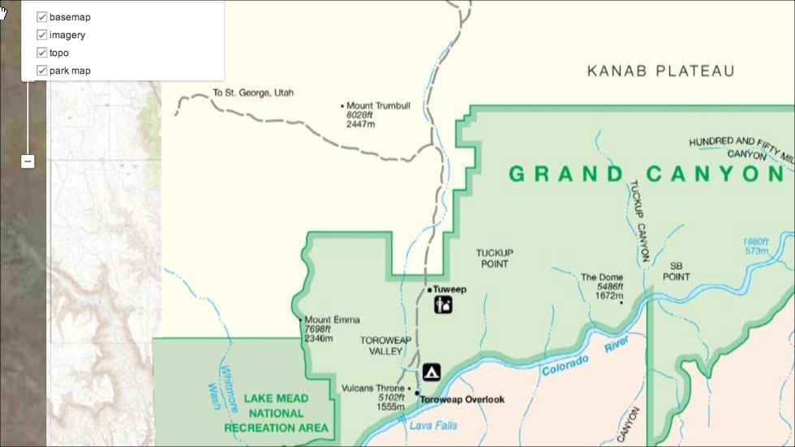
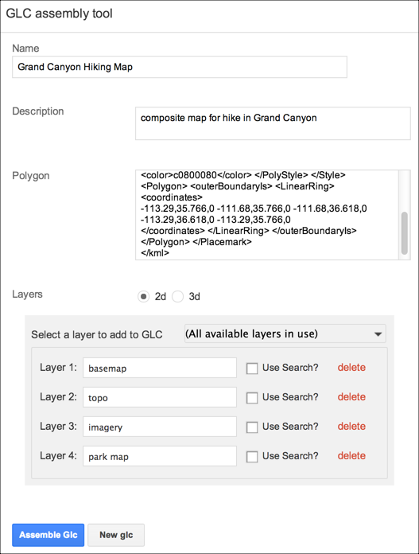
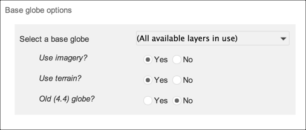
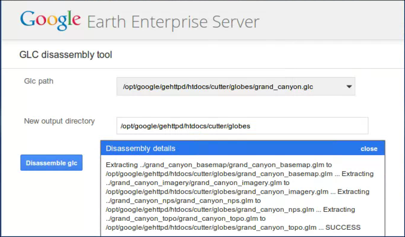

Google Earth Enterprise Documentation Home | GEE Server administration
Create composite globes and maps
Contents
Introduction
A composite globe (.glc) is an assembly of layers from existing portable globes or maps. A portable globe or map stores all the geospatial data available within your specified area of interest—your cut—including all high-resolution imagery, terrain, vector data, KML files, and searchable point of interest (POI) locations. Outside the specified area of interest, the globe or map stores only low-resolution imagery and terrain. You specify the levels of resolution when you cut the globe or map.
When you create a composite globe or map, you define your viewing area using a KML polygon, select layers, and in addition for globes, specify base globe options. One of the key benefits of using composite maps and globes is that you can apply layers that use different cuts or regions of interest, then assemble them to create one single portable map or globe.
For example, you may want to create a composite map for a hiking trip. You might cut a road map using one region of interest and then cut imagery and also a park map of the hiking trail using additional regions of interest. Ordinarily, cuts from map databases would result in separate .glm files. By assembling the .glm files into a composite .glc file, the result is a single portable map.

Creating composite maps and globes
You can create composite files of portable globes and maps with the Assembly tool feature of the Google Earth Enterprise (GEE) Server. You provide a KML polygon definition to identify the ‘area of interest.’ This polygon not only defines the viewing area, but is also used by Fusion to create a localized search database.
You select 2D or 3D layers to add to the composite file from any of the cut maps or globes that you have available in your /opt/google/gehttpd/htdocs/cutter/globes directory. In addition, for globes, you specify a base globe.
New .glc files are added to the default /opt/google/gehttpd/htdocs/cutter/globes directory. If you want to change the location of your portable files directory, see Serving a globe or map from GEE Server.
If you want to extract the 2D or 3D layers from a composite .glc file, you use the Disassembly tool, specifying a target directory for the extracted files.
To assemble a composite map or globe:
- Access the Google Earth Enterprise Server Admin console in a browser window by going to myserver.mydomainname.com/admin, replacing myserver and mydomainname with your server and domain.
- Sign in with the default credentials or the username and password assigned to you:
- Default username: geapacheuser
- Default password: geeadmin
Note: If you do not know your username and password, contact your Google Earth Enterprise Server System Administrator. Click Dashboard to view information about the portable files registered on and published to the Server.
- Click the Settings button in the top right of the window and choose Glc Assembly from the Tools menu. The GLC Assembly tool window appears.
- Enter a name for the offline map or globe.
The name defines the filename for your composite map or globe. Composite maps and globes are created as .glc files. Spaces, slashes, and double dots (..) will be converted to underscores in the saved map or globe name.
- Enter a description to be associated with the composite file.
The description appears in the list of portable files in Portable when you click the Folder icon and also on the Dashboard page in the GEE Server admin console.
- Provide a KML polygon to define your ‘area of interest,’ including the definition of your localized search database.
- Choose either 2D or 3D to see a list of the available layers from the maps and globes you have available in your /opt/google/gehttpd/htdocs/cutter/globes directory.
- Click the Layers drop-down list to select a layer to add to your composite file. The selected layer appears as Layer 1. Check the Use Search? box to include a localized search database with this layer.
- To add more layers, click the Layers drop-down list and continue to select from your available maps or globes.
Select the layers in the order that you want them to appear in your portable globe or map. If you need to remove a layer, click delete.

When you have no more layers available, the Layers drop-down list indicates that all available layers are in use.
For composite maps, once you have assembled the layers you want to include, click Assemble Glc.
For composite globes, you select a base globe and apply options to it.

This option only affects the imagery layer within older .glb files.
Extracting layers from a composite map or globe
If you want to extract the 2D or 3D layers from a composite .glc file, you use the Glc Disassembly tool, specifying a target directory for the extracted files.
To disassemble a composite file:
- Access the Google Earth Enterprise Server Admin console in a browser window by going to myserver.mydomainname.com/admin, replacing myserver and mydomainname with your server and domain.
- Sign in with the default credentials or the username and password assigned to you:
- Default username: geapacheuser
- Default password: geeadmin
Note: If you do not know your username and password, contact your Google Earth Enterprise Server System Administrator. Click Dashboard to view information about the portable files registered on and published to the Server.
- Click the Settings button in the top right of the window and choose Glc Disassembly from the Tools menu. The GLC disassembly tool window appears.
- Click open the Glc path drop-down list to select a composite file to disassemble.
By default, the Glc path is the /opt/google/gehttpd/htdocs/cutter/globes directory, where all portable maps and globes are stored.
- Enter a new output directory in the text box.
- Click Disassemble glc.
The layers in the composite file are extracted and are moved to the output directory that you specified. If you included a base globe, this portable file is also output to the same directory.
